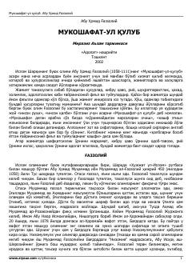

MQInson qalbini poklash va ma'naviy kamolotga erishish yo'llarini ko'rsatuvchi asar.
Abu Homid G'azzoliyning ushbu mashhur asari inson qalbini poklash, illatlardan xalos etish va ma'naviy sakinatga erishish yo'llarini ochib beradi. Kitobda Allohdan qo'rqish, oxiratni eslash va axloqiy fazilatlar haqida hikmatli mulohazalar keltirilgan.